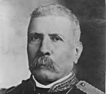
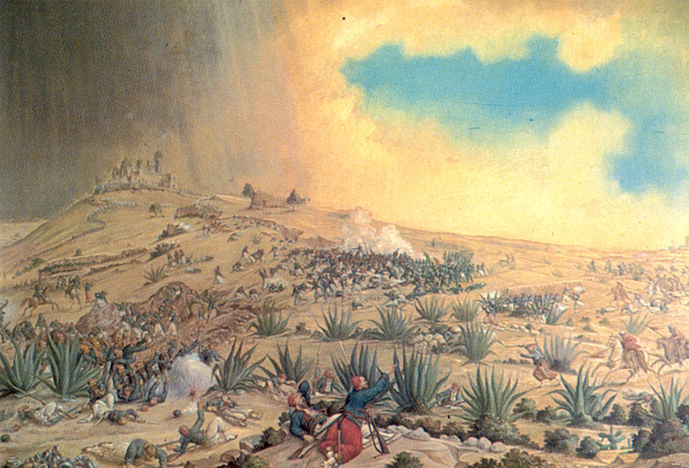

batalla del 5 de mayo
 1
1¿Quieres saber mas ?
El 5 de mayo se conmemora la batalla de Puebla de 1862, en la que el Ejército mexicano al mando del texano Ignacio Zaragoza derrotó a las tropas del Segundo Imperio francés, que habían invadido el país y eran consideradas las más poderosas del mundo

En México el 5 de Mayo se conmemora el día de la Batalla de Puebla, en la cual el ejército mexicano venció al ejército francés. La historia narra que todo comenzó hacia el año de 1862. Benito Juárez quien recientemente había sido elegido Presidente de México, suspendió los pagos de la deuda externa por dos años, ya que el país tenía una crisis financiera; así los franceses, españoles e ingleses vinieron a México con el fin de cobrarse a la fuerza la deuda.
Detrás de ambos ejércitos (mexicano y francés) se encontraban los lideres del gobierno, Benito Juarez en el caso de México y Napoleon III en el caso de Francia. Pero los protagonistas en esa batalla fueron los comandantes al mando de las tropas beligerantes: Ignacio Zaragoza que comandaba las tropas mexicanas y Charles Ferdinand que hacia lo propio con las tropas francesas; fueron ellos los que mas influyeron en el curso y el final de la batalla.
benito juarez

ignacio zaragosa

porfirio diaz
miguel negrete
Pero los ingleses y los españoles se marcharon sin conseguir nada, en contraste los franceses no pensaban irse hasta haber triunfado, ya que Napoleón III pensaba establecer en México una monarquía favorable para Francia. Las tropas francesas estaban muy bien equipadas y eran mucho más grandes que el ejercito Mexicano; por lo que Benito Juárez convocó a toda la población a que luchara, así se formó un ejército de aproximadamente 4800 hombres. Fue el 5 de Mayo de 1862 cuando el General Laurencez al mando de las tropas francesas ordenó el asalto a los fuertes de Loreto y Guadalupe, que defendían la ciudad de Puebla al mando del General Ignacio Zaragoza; el ejercito invasor que fue rechazado con grandes pérdidas al intentar repetidas veces tomar las fortificaciones, al final tuvieron que abandonar el campo y retirarse vencidos y perseguidos por la caballería mexicana, la noticia del triunfo en Puebla llenó de entusiasmo a todo el país, moralmente levantó a el pueblo que se encontraba desanimado y temeroso por una posible invasión.
Pero este no fue el fin de toda la guerra ya que en junio de 1864, un grupo de conservadores marchó a Francia a ofrecer el gobierno al Emperador Francés Napoleón III; ya que este tenía planes de extender el Imperio Francés mandó a Maximiliano de Habsburgo a tomar el trono y formar el Imperio de México. Maximiliano de Habsburgo y su esposa Carlota (austriacos) llegaron a la ciudad de México para instalar el Imperio Mexicano y fueron coronados como el Emperador y la Emperatriz de México. Aunque Maximiliano organizó la administración del gobierno, liberó a los indios de la esclavitud, y desarrolló los recursos naturales del país, no pudo evitar la oposición del pueblo Mexicano. Los republicanos, al mando de Benito Juárez, no aceptaron la intervención extranjera. Se refugiaron en el norte del país y les pidieron ayuda a los californianos y a otras colonias mexicano-norteamericanas con financiamiento y voluntarios para la lucha.

El 4 de mayo de 1862 durante la Segunda Intervención Francesa en México, en la hacienda de La Trapera los atlixquenses y elementos del ejército mexicano de la república, al mando de los Generale Antonio Carvajal y Tomas O´Horan se enfrentaron a las tropas al servicio del Segundo Imperio Mexicano comandadas por el Gral. José María Cobos y de Leonardo Márquez compuesta de soldados conservadores mexicanos en apoyo de envió de refuerzos para llevar a cabo la Batalla de Puebla. Esta batalla culminó con una victoria republicana, debido a esto, el grupo conservador de Márquez no pudo lograr su objetivo de auxiliar al dia siguiente a las tropas francesas del Conde de Lorencez en la batalla de Puebla.